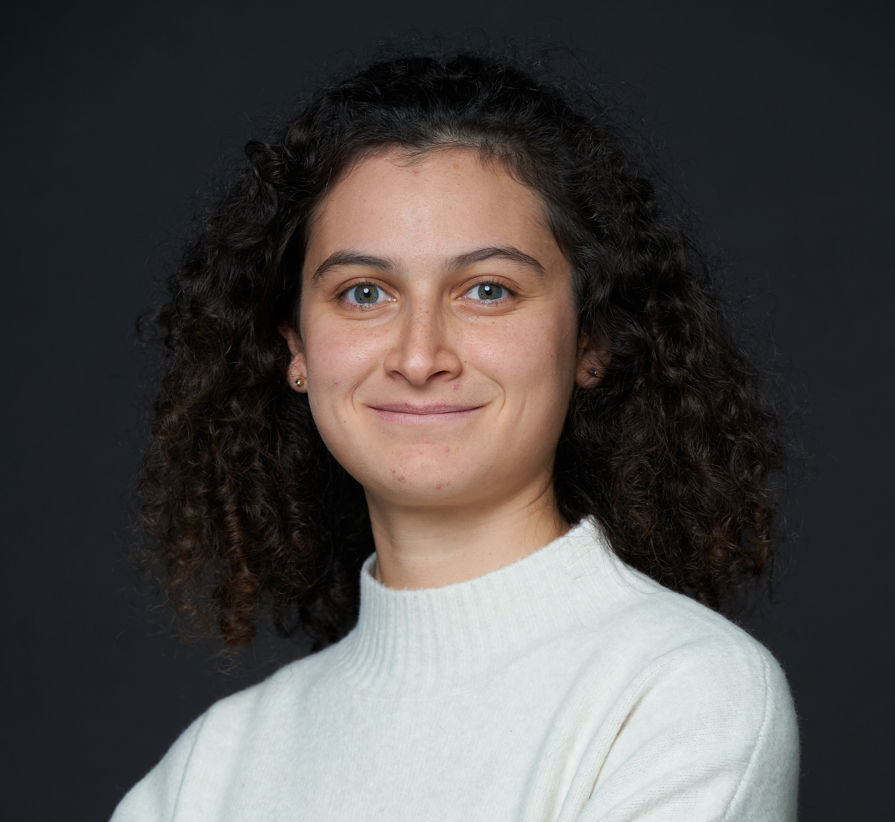

Sirine Louati
PhD student in Applied Mathematics
ENSAE Paris
Teaching Assistant at ENSAE — Top 1% of TAs
sirine.louati@ensae.fr
About me
I am a third year PhD student in Applied Mathematics at ENSAE Paris.
My research focuses on robust estimation, high-probability guarantees, statistical learning theory and concentration inequalities.
I am supervised by Alexandre Tsybakov and Jaouad Mourtada.
I am also a teaching assistant at ENSAE Paris, ranked among the top 1% of TAs at the school.
Publications
- 2025. Estimation of discrete distributions with high probability under χ²-divergence. S. Louati. Submitted, 2025.
- 2025. Performance of the empirical median for location estimation in heteroscedastic settings. S. Louati. arXiv preprint, arXiv:2501.16956.
Teaching
- Teaching Assistant, ENSAE Paris (Oct. 2023 – present)
- Mathematical Statistics, Fast track, M2 level — 12h/year (2023–2026)
- Statistics 1, M1 level — 2×16.5h/year (2023–2026)
- Statistics 2, M1 level — 10.5h/year (2023–2026)
- Probability Theory, Fast track, M1 level — 9h/year (2024–2026)
- Nonparametric Estimation, M2 level — 9h/year (2023–2024)
Talks
- 2025. 56èmes Journées de Statistique, Marseille, France.
- 2023. Journées de rentrée du Master “Mathématiques et Applications”, IMO, Orsay, France.
Conferences
- Apr 2025. Workshop on “Recent Advances in Statistical Robustness”, ESSEC Rabat, Morocco.
- Dec 2024. Meeting in Mathematical Statistics, CIRM, Luminy, France.
- Sep 2024. 11th Heidelberg Laureate Forum, Heidelberg, Germany.
Distinctions and Awards
- 2023. Maryam Mirzakhani Junior Award — Jacques Hadamard Mathematical Foundation (FMJH).
- 2022–2023. Sophie Germain Master Scholarship — Jacques Hadamard Mathematical Foundation (FMJH).